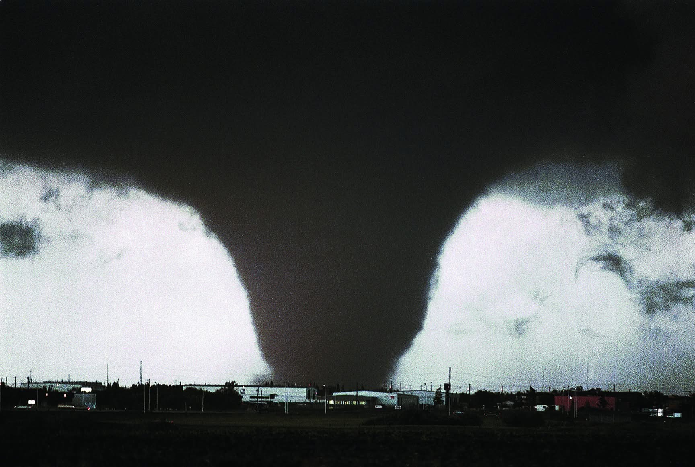
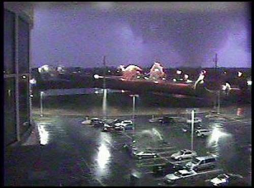
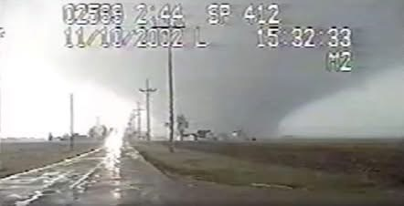
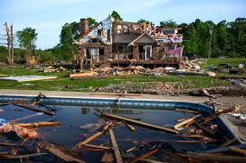
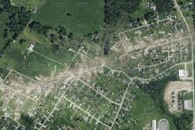
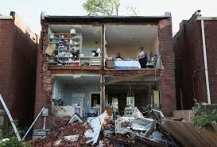

These websites share reliable information about tornado safety, research, and storm chasing.
Use them to explore how experts and storm chasers study severe weather and work to keep
people informed.
These example images highlight different storm features that can appear on severe weather days.
Replace the filenames with your own project images while keeping the same layout.

Edmonton’s July 31, 1987 tornado, a powerful F4 that struck eastern Edmonton and Strathcona
County. Known locally as “Black Friday.”

The only known photograph of the deadly Evansville, Indiana F3 tornado of November 6, 2005,
captured by a hospital webcam in Newburgh.

A dashcam still of the Van Wert, Ohio F4 tornado on November 10, 2002, filmed by the Ohio
State Highway Patrol.Before-and-after aerial comparisons showing varying damage levels, from no damage (ND)
to major damage (MA), based on structural performance after a tornado.

Damage from the May 4, 2003 Kansas City tornado outbreak near 77th and Cernech Road in
Kansas City, Kansas.

Aerial view of the May 22, 2011 Joplin, Missouri tornado path, showing near-total
destruction through densely populated neighborhoods.

Tornado damage in St. Louis, Missouri, following the May 16, 2025 storm.